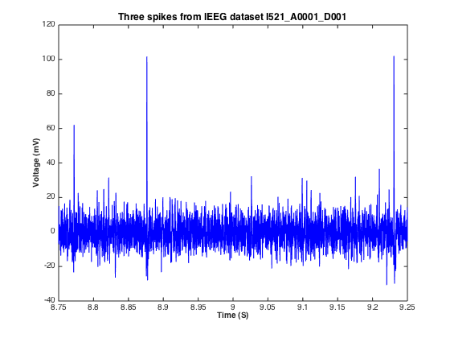

clear; clc; clf; close all;
dataset = 'I521_A0001_D001';
me = 'mlautman';
pass_file = 'mla_ieeglogin.bin';
[T,session] = evalc('IEEGSession(dataset, me, pass_file)');
disp(session)
<a href="matlab:help('IEEGSession')">IEEGSession</a>:
server: 'ieeg.org'
userName: 'mlautman'
data: [1x1 IEEGDataset]
<a href="matlab:methods(IEEGSession)">Methods</a>, <a href="matlab:IEEGObject.openPortalSite()">main.ieeg.org</a>
data=session.data;
sample_rate = data.sampleRate;
disp(sample_rate)
32051
recording_length= data.channels(1).getNrSamples;
recording_length_s = recording_length/sample_rate;
disp(recording_length_s)
10
s_s = 8.75;
e_s = s_s + .5;
s = max(round(s_s*sample_rate), 1);
e = min(round(e_s*sample_rate), recording_length);
vals = data.getvalues(s:e,1);
figure(1);
plot(...
(s:e)./data.sampleRate, ...
vals, ...
'color', ...
'b' ...
);
xlim([s_s, e_s]);
ylabel('Voltage (mV)', 'FontSize',10,'FontWeight','bold');
xlabel('Time (S)', 'FontSize',10,'FontWeight','bold');
title('Three spikes from IEEG dataset I521\_A0001\_D001', 'FontSize',12,'FontWeight','bold');
print -dpng ./img/three_spikes_matlab
